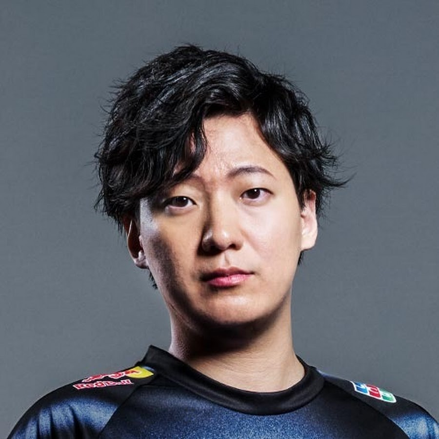

推しストリーマー

japanesekreanUg
Twitch / YouTube
私の一番好きなストリーマーです。面白い配信をしていて、いつも楽しく見させてもらっています。
配信視聴スタイル
🎮 ゲーム配信
基本的にUGの配信しか見ません。チャンネルポイントは100万くらいあります。
🎵 作業用BGM
勉強や作業をしながら見てます。テンション高すぎて勉強しながらはおすすめしません。
📱 スマホで視聴
移動中やちょっとした空き時間に、スマホでアーカイブやyoutubeの動画を見ています。